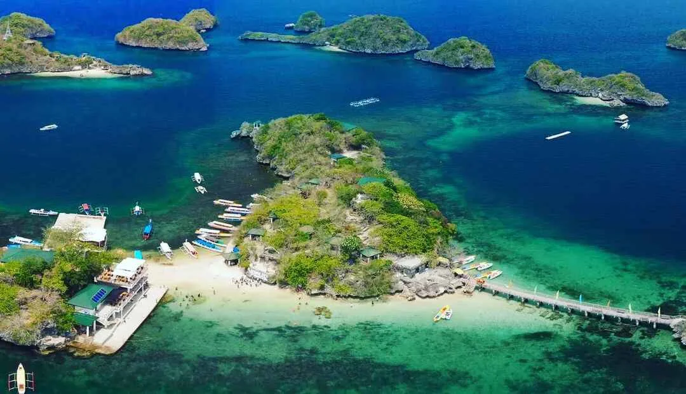
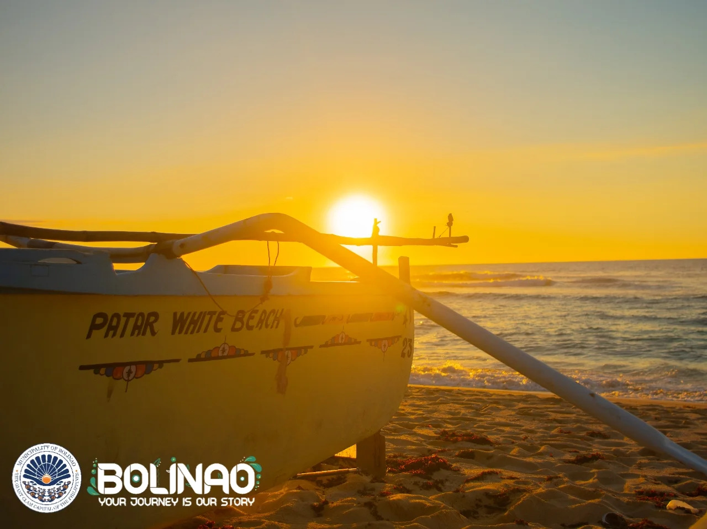

Why Visit Pangasinan?
Pangasinan is one of the most beautiful provinces in Northern Luzon, offering a mix of natural wonders, historical landmarks, and vibrant local culture. It is perfect for travelers who love both relaxation and adventure.
Natural Wonders

Pangasinan is home to breathtaking natural attractions such as the Hundred Islands National Park, where visitors can explore over 100 unique islands with crystal-clear waters and scenic views. It is one of the most famous island-hopping destinations in the Philippines.
The province also features waterfalls, beaches, and mountain landscapes that provide a refreshing escape from city life.
Beach Destinations

Pangasinan is famous for its long coastline and beautiful beaches such as Patar Beach in Bolinao, known for its golden sunset and clear blue waters.
Lingayen Beach is another popular destination that offers calm waters and historical significance, making it ideal for family trips and relaxation.
Cultural Experience

Beyond nature, Pangasinan is rich in culture and spirituality. The Minor Basilica of Our Lady of Manaoag is a famous pilgrimage site visited by thousands of devotees every year.
Festivals, traditions, and local customs make every visit more meaningful and memorable for tourists.
What to Expect
Ready to Visit?
Start planning your Pangasinan adventure today and discover why it is one of the top destinations in Luzon.
Go to Inquiry Page